/math-24e1348a922751ccbd4fc0a55d9f6ca8.png "y_{ij,k}\,\!") を因子Aのレベル I と因子Bのレベル j でのk番目の観測値を表すものとすると、二元配置分散分析モデルは下記のように書くことができます。
を因子Aのレベル I と因子Bのレベル j でのk番目の観測値を表すものとすると、二元配置分散分析モデルは下記のように書くことができます。
を因子Aのレベル I と因子Bのレベル j でのk番目の観測値を表すものとすると、二元配置分散分析モデルは下記のように書くことができます。
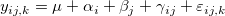
ここで、/math-74b8eddf4b37de80c7c8eed1b64e46fc.png "\mu \,\!") は全体の応答データの平均、
は全体の応答データの平均、
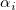
は因子Aのレベル I での偏差、/math-193f021d9028eb9706698a6f5c0f1e0a.png "\beta _j\,\!") は因子Bのレベル j での偏差、
は因子Bのレベル j での偏差、/math-4893dd2481ae10c24164553d3930b4b6.png "\gamma _{ij}\,\!") は2つの因子間の交互作用項、
は2つの因子間の交互作用項、/math-2d8e26c124bbaaff2975eca997214c41.png "\varepsilon _{ij,k}\,\!") は誤差項です。そして、標本の変化は、3つの部分に分けられ、3つの仮説検定を行うことができます。
は誤差項です。そして、標本の変化は、3つの部分に分けられ、3つの仮説検定を行うことができます。
因子Aに関しては、帰無仮説はr の異なる母集団の平均が同じとし、対立仮説は、少なくとも1つの標本の平均が、他とは異なるということになります。
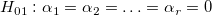
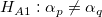
, のとき、p および qにおいて1 ≤ p, q ≥ r因子Bについては、帰無仮説は、s の異なる母集団の平均が同じであり、対立仮説は少なくとも1つの母集団の平均が他の母集団と異なるということになります。
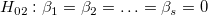
;/math-7a89b6844c46c8800f73742ac898bdbc.png "H_{A2}:\beta _p\neq \beta _q") のとき、pおよびqに対して 1 ≤ p, q ≥ s;
のとき、pおよびqに対して 1 ≤ p, q ≥ s;
交互作用の項に対して、帰無仮説は、2つの因子間の交互作用が無いということです。
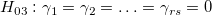
;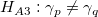
のとき、pおよびqに対して 1 ≤ p, q ≥ rs;これらの仮説を検証するため、標本全体の分散を4つの部分に分け、標本の変動によって推定します。
/math-2c795d2f616da7e117502bbcf9cb9a87.png "SS_{Total}=SS_{Error}+SS_A+SS_B+SS_{AB}\,\!")
ここで
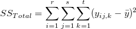
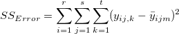
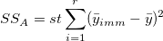
/math-07adec886e53b88c568666a7f5ad66d9.png "SS_B=rt\sum_{j=1}^s(\bar y_{mjm}-\bar y)^2")
/math-472bd2d14aa56baec128037732f9c276.png "S_{AB}=t\sum_{i=1}^r\sum_{j=1}^s(\bar y_{ijm}-\bar y_{imm}-\bar y_{mjm}+\bar y)^2")
また、
/math-74c3be6091d315b1d45889451f08c9f1.png "\bar y=\frac 1{rst}\sum_{i=1}^r\sum_{j=1}^s\sum_{k=1}^ty_{ij,k}")
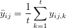
/math-2ae3b31c7b66edb18f543169b3f2c9fa.png "\bar y_{imm}=\frac 1{st}\sum_{j=1}^s\sum_{k=1}^ty_{ij,k}")
/math-6b23df9fc156465fe8f63b0c088432ec.png "\bar y_{mjm}=\frac 1{rt}\sum_{i=1}^r\sum_{k=1}^ty_{ij,k}")
/math-100f5db42fc55631c7b4e798218f6a8f.png "SS_{Total}") は平方和であり、
は平方和であり、/math-8d95f5934baa7c353f18fd77c675e92c.png "SS_A") は因子Aからの平均差の変動を表します。
は因子Aからの平均差の変動を表します。
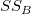
は因子Bとの平均差の変動を表し、/math-23d40e491f33023cbce6ed1898054a81.png "SS_{AB}") はは交互作用の変動、
はは交互作用の変動、/math-349fb0475e9b16a6353bbc1aae235e6a.png "SS_{Error}") はすべての個別の標本の変動を表します。次に、F検定を使って、それらの間の分散の有意差を検定できます。
はすべての個別の標本の変動を表します。次に、F検定を使って、それらの間の分散の有意差を検定できます。
/math-fd17c1de0001a4efd8b9a0c82993d061.png "F_A=\frac{MS_A}{MS_{Error}}=\frac{SS_A/(r-1)}{SS_{Error}/(rs(t-1))}\sim F_\alpha (r-1,rs(t-1))")
/math-44845adb89d0b9dd10565f5ff22f742a.png "F_B=\frac{MS_B}{MS_{Error}}=\frac{SS_B/(s-1)}{SS_{Error}/(rs(t-1))}\sim F_\alpha (s-1,rs(t-1))")
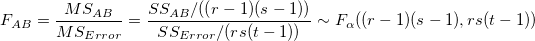
ある有意水準/math-7b7f9dbfea05c83784f8b85149852f08.png "\alpha") が与えられると、 F 統計量が重要な値
が与えられると、 F 統計量が重要な値/math-61ee10cfeb9c8fea41d940edebb82588.png "F_\alpha") を超える場合、またはF統計量のP値が有意水準以下の場合、帰無仮説
を超える場合、またはF統計量のP値が有意水準以下の場合、帰無仮説/math-e65765bedcabe42c66ec93228769e82a.png "H_0") は棄却されます。
は棄却されます。
二元配置分散分析の計算は以下のようにまとめることができます。
| 変動のソース | 自由度(DF) | 平方和(SS) | 平均平方(MS) | F 値 | Prob > F |
|---|---|---|---|---|---|
| 因子A | r - 1 |
|
/math-d8cf712091994539169b7f92bcabdd67.png "MS_A")
|
/ /math-ff8dc369a4b279c7e064cb1ef6fc4ba1.png "MS_{Error}")
|
/math-336e88336f1a211d0c3f3e2f533edff3.png "P\{F\geq F_{(r-1,rs(t-1),\alpha )}\}")
|
| 因子B | s - 1 | /math-666cadb9e58dc0e560e052a20e3a510f.png "MS_B")
|
/
|
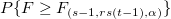 | |
| 交互作用 | (r- 1) (s - 1) |
|
/math-bcd1cd8741b39cdd8c3e290f145ae5a1.png "MS_{AB}")
|
/
|
/math-50ceeeecbb0c9e5fec9e00f101ebad0c.png "P\{F\geq F_{((r-1)(s-1),rs(t-1),\alpha )}\}")
|
| 誤差 | rs (t - 1) |
|
|
||
| 合計 | rst - 1 |
|
Originの二元配置分散分析は、いくつかのNAG関数を使っています。NAG関数nag_dummy_vars(g04eac)は必要な設計行列を作成するために使用され、NAG関数nag_regsn_mult_linear(g02dac)は設計行列の線形回帰を実行するために使用されます。線形回帰の結果は、二元配置ANOVA表を作成するのに使われます。詳細はNAG文書をご覧ください。
分散分析においては、異なるサンプルが等しい分散を持つと仮定します。これを一般に等分散性と呼びます。Levene検定とBrown-Forsythe検定を使用して、この仮定を検証できます。仮に、k個の応答データサンプルがあるとしましょう。ここで、/math-53969de94b3708187e040cc38293f661.png "y_{ij}\,\!") はj 番目の因子レベル (j = 1, 2, ..., k)における i 番目の観測値 (i = 1, 2, ...
はj 番目の因子レベル (j = 1, 2, ..., k)における i 番目の観測値 (i = 1, 2, .../math-4aa861124eff57dd7988faa6753e8b7e.png "n_j") ) を表します。Levene検定とBrown-Forsythe検定の仮説は次のように表すことができます。
) を表します。Levene検定とBrown-Forsythe検定の仮説は次のように表すことができます。
：
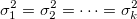
/math-6207a80403dcccc1aa3b5b7303315c4b.png "H_1") :
:
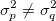
、少なくとも1組 (p, q)に対して、/math-f3befe30a4a0d18509558e6012408028.png "1\leq p,q\leq k")
異なる検定に基づいて、/math-2af48c8053eb375472b4bbf78b90cec3.png "Z_{ij}\,\!") を以下のように定義します。
を以下のように定義します。
/math-b4e5bd6341b0f8ff84bf4a86cd819c58.png "Z_{ij}=|y_{ij}-\bar y_j|")
/math-ca90d368003ebe629f44501f0e71c07a.png "Z_{ij}^2=(y_{ij}-\bar y_j)^2")
/math-face015854160d6388d3424185d3c24a.png "Z_{ij}=|y_{ij}-m_j|\,\!")
帰無仮説が成立するとき、検定統計量は
/math-9550c1c345a48df5bdeda1954598b3a4.png "F=\frac{\sum_{j=1}^kn_j(\bar Z_j-\bar Z)^2/(k-1)}{\sum_{j=1}^k\sum_{i=1}^{n_1}(Z_{ij}-\bar Z_j)^2/(n-k)}")
F分布/math-9c7168c68d0f7e7fcc65ef56a0cf4e87.png "F_{(k-1,n-k)}\,\!") に従います。ここで
に従います。ここで
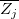
および/math-a79056b6644e25416e91e8b496e5d378.png "\overline{Z}") は、それぞれ のグループ平均と全体の平均です。
は、それぞれ のグループ平均と全体の平均です。
二元配置ANOVA実験によって、少なくとも1つの因子レベルの平均が他の因子レベルの平均と統計的に異なることが判明した場合、その後、平均比較を行い、どの因子レベルの平均（または平均群）が有意に異なるかを調べます。Originでは、複数の平均比較のためにさまざまな方法が提供されており、NAG関数nag_anova_confid_interval (g04dbc)を使用して平均比較を実行します。
複数平均の比較方法には、次の2種類があります。
単一ステップ法これは、Tukey-Kramer、Bonferroni、Dunn-Sidak、Fisher’s LSD、Scheffe、Dunnetなど、同時信頼区間を作成して、平均がどのように異なるかを示します。
段階的法Holm-BonferroniおよびHolm-Sidakh法のように、仮説検定を順番に実行します。
検出力分析手順は、サンプルデータの実際の検出力を計算するとともに、追加のサンプルサイズが指定された場合の仮定の検出力も計算します。
二元配置分散分析（ANOVA）の検出力は、その分析の感度を測定するものです。検出力は、実際に母集団の平均に差異が存在する場合に、その差異をANOVAが検出する確率です。帰無仮説と対立仮説に関して言うと、検出力は、実際に帰無仮説が棄却されるべき時に、F検定統計量が極端な値をとって帰無仮説を棄却する確率です（つまり、帰無仮説が真でない場合に棄却される確率）。
Originの二元配置ANOVAダイアログでは、因子Aおよび因子Bの検出力を計算できます。 もし「交互作用」チェックボックスが選択されていれば、Originは交互作用（A*B）についても検出力を計算できます。
検出力は次の式で定義されます。
/math-e3a9b7f790e5b9b01d2fe974337ea4cf.png "power=1-probf(f,df,dfe,nc)\,\!")
ここで、fは非中央F分布の偏差、dfは分子の自由度、dfeは誤差の自由度、nc = SS/MSEです。 SSはソースA、B、またはA * Bの平方和、MSEは誤差の平均平方、dfはソースA、 B、またはA * Bの自由度、dfeは誤差の自由度です。 すべての値（SS、MSE、df、dfe）はANOVA表から取得されます。probf ()の値はNAG関数nag_prob_non_central_f_dist (g01gdc)を使って取得します。 詳細はNAG文書をご覧ください。
上記は一元配置分散分析の簡単なアルゴリズムの概要です。詳細な数学的な導出については、ユーザーマニュアルおよびNAGドキュメントの該当部分を参照してください。